<!DOCTYPE html>
<html lang="en" xmlns:th="http://www.thymeleaf.org">
<head>
    <meta charset="UTF-8"/>
    <title>Footer</title>
    <link th:replace="partials/header.html :: header"/>
</head>
<body>
<!--<footer class="page-footer">-->
<!--    <div class="container">-->
<!--        <div>-->
<!--            <h2>Top-Teer</h2>-->
<!--            <p>Top-Teer was made as a way to coordinate volunteers with opportunities. We hope it helps you!</p>-->
<!--        </div>-->
<!--    </div>-->
<!--    <div class="footer-copyright indigo darken-4">-->
<!--        <div class="container facebook-800-text">-->
<!--            Codeup 2021. For educational purposes only.-->
<!--        </div>-->
<!--    </div>-->
<!--</footer>-->

<footer class="footer">
    <div class="container">
        <div class="row">
            <div class="col-md-9">
                <h5>TOP-TEER INC.</h5>

                <div class="nav">
                    <h1 class="nav-item"><a href="https://github.com/topteer/topteer-capstone" class="nav-link" target="_blank"><i class="fa fa-github fa-lg"></i></a></h1>
                </div>
                <br>
            </div>
            <div class="col-md-3">
                <h2 class="text-md-right"><a href="mailto:tTeerCom@gmail.com">Contact us</a></h2>
                <hr>
                <div>
                    <p>Top-Teer is an event coordinating application that puts volunteers in touch with opportunities led by the event coordinator. Making the process of volunteering in the community more accessible to application users.</p>
                </div>
            </div>
            <div class="footer-copyright indigo darken-4">
                <div class="container facebook-800-text">
                    Codeup 2021. For educational purposes only.
                </div>
            </div>
        </div>
    </div>
</footer>
</body>
</html>